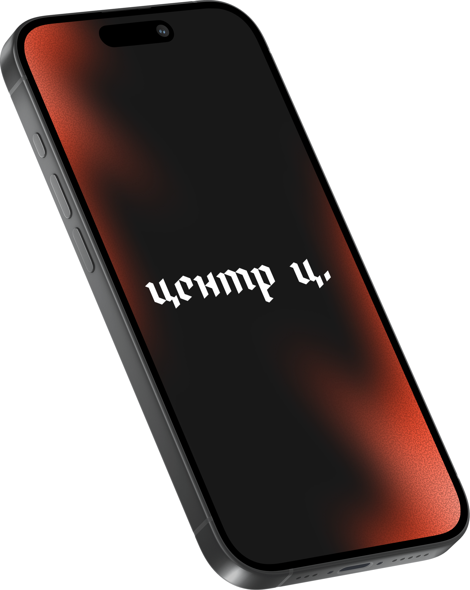

Независимый проект
Центр «Ц»
Противодействие цензуре, репрессиям и политическим преследованиям — через исследования, практические инструкции и поддержку тех, кого ограничивают в свободе слова.

О проекте
Центр «Ц» — независимый проект, созданный российскими активистами, направленный на противодействие цензуре, репрессиям и политическим преследованиям.
Мы проводим опросы, разрабатываем инструкции, информируем общественность о проблемах и оказываем помощь в противостоянии ограничению свободы слова и политическим репрессиям.
Свободная пресса и интернет — не привилегия, а основа гражданского общества.
Чем мы занимаемся
Четыре направления работы проекта
-
Опросы
Изучаем общественное мнение о цензуре, блокировках и ограничениях — чтобы говорить о проблеме на основе данных.
-
Инструкции
Разрабатываем практические руководства по цифровой безопасности, доступу к информации и защите от слежки.
-
Информирование
Рассказываем обществу о цензуре, репрессиях и нарушениях прав — чтобы проблема оставалась на виду.
-
Помощь
Поддерживаем людей, столкнувшихся с политическими преследованиями и ограничением свободы слова.
Наши принципы
- Независимость. Проект не подчиняется государственным или корпоративным интересам.
- Активизм. Создан силами людей, которые сами сталкиваются с репрессиями и цензурой.
- Практичность. Каждое направление работы направлено на конкретную пользу для общества.
- Открытость. Мы говорим о проблемах вслух — даже когда это неудобно.